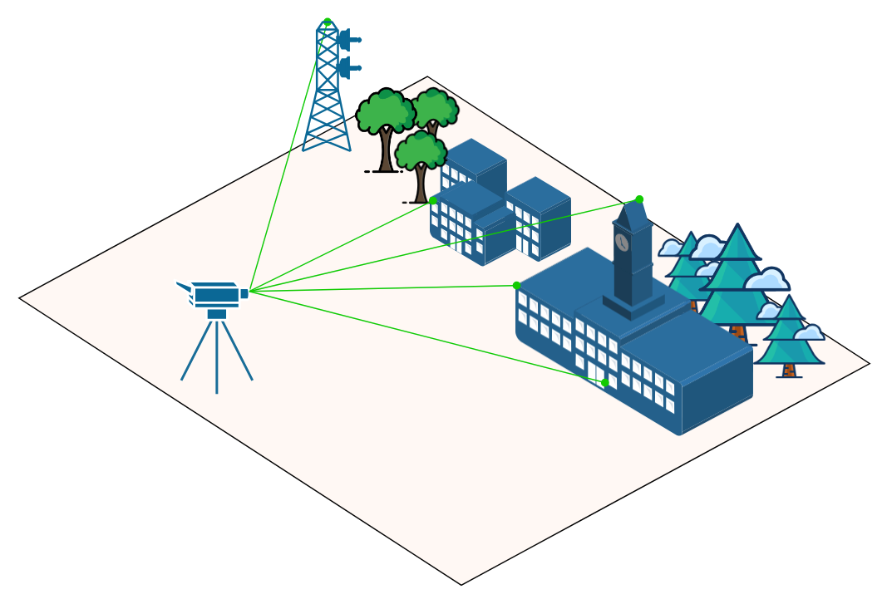
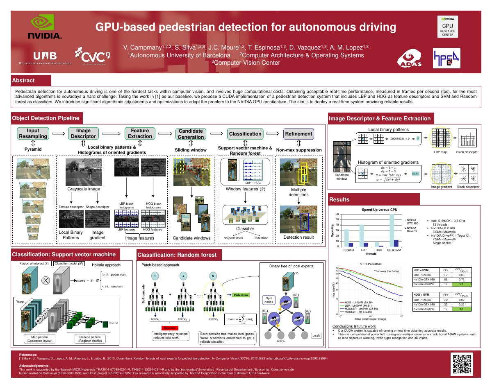
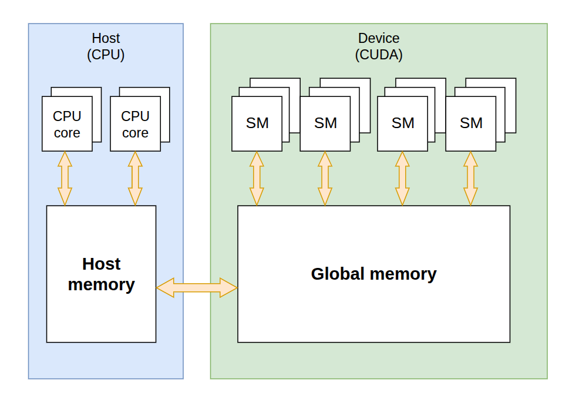
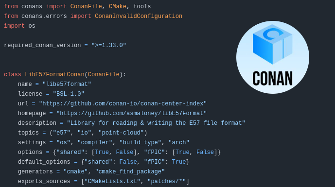
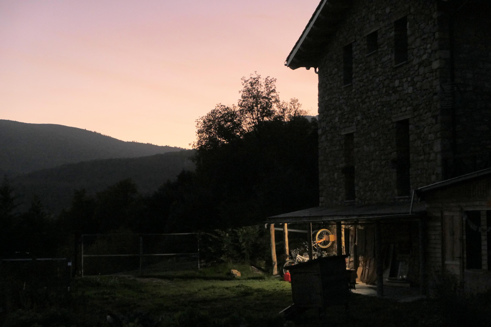
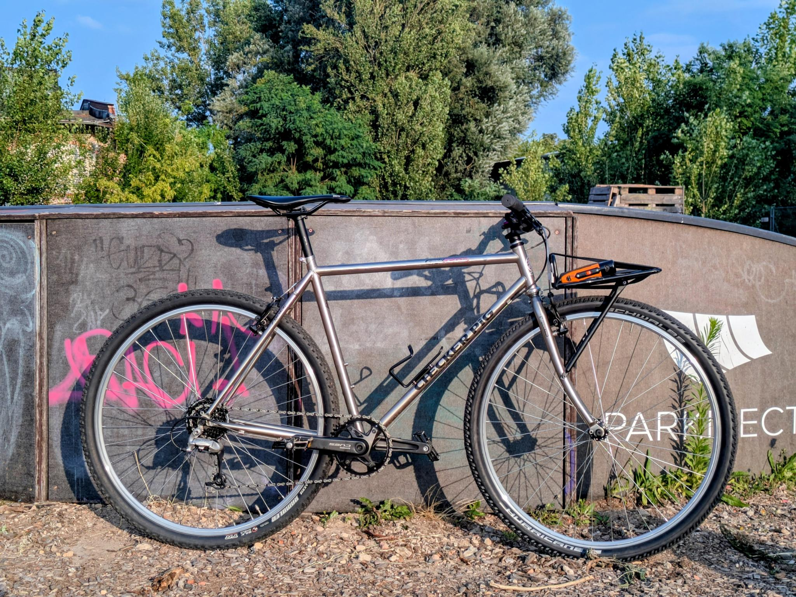
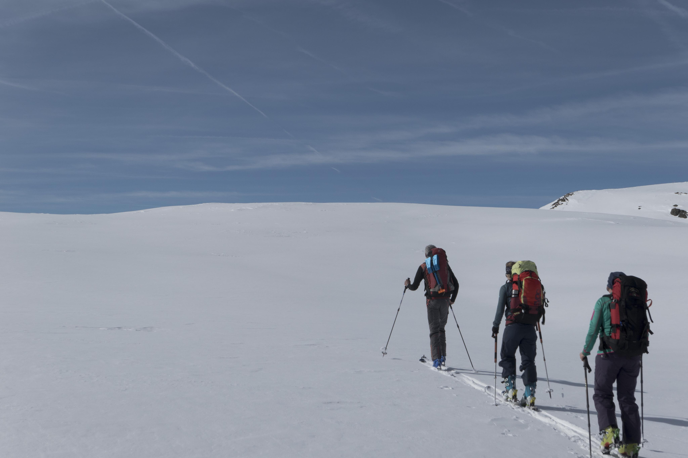

Computer Vision Engineer
Hi, I'm Victor. I build systems that help machines see.
I work on computer vision and software engineering projects. My focus is real-time perception pipelines on edge and cloud platforms. I worked in a variety of projects ranging from GPU algorithm optimization for embedded platforms to cloud-based Visual Positioning Systems.
Selected work
Projects
My favorite professional and hobby software projects that trace my journey from my early career days to today.
Project image placeholder
Computer Vision-based Bike Fitting Tool
A tool that analyzes a cyclist's position on the bike from
video using pose estimation, tracking joint angles at the
knee, hip, and back through the pedal stroke. It compares
these against biomechanical fit guidelines to suggest
saddle height, reach, and cleat adjustments. While bike
fitting is usually done with expensive motion-capture rigs
and sensors, this approach only needs a phone camera.
Computer Vision-based Bike Fitting Tool
A tool that analyzes a cyclist's position on the bike from video using pose estimation, tracking joint angles at the knee, hip, and back through the pedal stroke. It compares these against biomechanical fit guidelines to suggest saddle height, reach, and cleat adjustments. While bike fitting is usually done with expensive motion-capture rigs and sensors, this approach only needs a phone camera.
More detail on the approach, the pose-estimation model used, how the biomechanical guidelines were sourced, and example before/after fit recommendations goes here.
Biomechanical fit guidelines are based on the book Bike Fit (2nd Edition) by Phil Burt ↗.

Visual Positioning System for Indoor Navigation
A vision-only indoor positioning system built at aryve,
delivering centimeter-precise localization using purely
computer vision and image matching — no beacons, Wi-Fi, or
other hardware required. I led the computer vision effort
from the ground up and built the backend that powers this
localization.

Visual Positioning System for Indoor Navigation
A vision-only indoor positioning system built at aryve, delivering centimeter-precise localization using purely computer vision and image matching — no beacons, Wi-Fi, or other hardware required. I led the computer vision effort from the ground up and built the backend that powers this localization.
The system matches live camera frames against a pre-built visual map of the indoor space, using feature matching to resolve the device's position to within a few centimeters — entirely from vision, with no additional positioning hardware.

GPU-based Pedestrian Detection for Autonomous Driving
A GPU-accelerated, vision-based pedestrian detector built
for autonomous driving, developed with the Computer Vision
Center research group and running on the NVIDIA DrivePX platform.
The work won the Best Poster Award at NVIDIA's GPU Technology Conference (GTC) 2016.

GPU-based Pedestrian Detection for Autonomous Driving
A GPU-accelerated, vision-based pedestrian detector built for autonomous driving, developed with the Computer Vision Center research group and running on the NVIDIA DrivePX platform. The work won the Best Poster Award at NVIDIA's GPU Technology Conference (GTC) 2016.

FriendlyDevicePtr
A lightweight, header-only C++ class that frees CUDA
device memory automatically, following the same ownership
model as std::unique_ptr. GPU memory is
allocated on construction and freed automatically when the
pointer goes out of scope. I've used this
header file in some of my CUDA projects.

FriendlyDevicePtr
A lightweight, header-only C++ class that frees CUDA
device memory automatically, following the same ownership
model as std::unique_ptr. GPU memory is
allocated on construction and freed automatically when the
pointer goes out of scope. I've used this
header file in some of my CUDA projects.
Without FriendlyDevicePtr
std::vector<float> a;
a.reserve(n)
{
float* d_a;
cudaMalloc(&d_a, a.size() * sizeof(float));
cudaMemcpy(d_a,
a.data(),
a.size() * sizeof(float),
cudaMemcpyHostToDevice);
...
kernel<<<grid, block>>>(d_a, a.size());
cudaMemcpy(a.data(),
d_a,
a.size() * sizeof(float),
cudaMemcpyDeviceToHost);
...
cudaFree(d_a); // must remember on every exit path
}
processVector(a);
...With FriendlyDevicePtr
std::vector<float> a;
a.reserve(n)
{
dptr::DevicePtr<float> d_a(a.data(), a.size());
...
kernel<<<grid, block>>>(d_a.get(), d_a.getCount());
cudaMemcpy(a.data(),
d_a.get(),
d_a.getBytes(),
cudaMemcpyDeviceToHost);
...
} // GPU memory is freed at scope exit
processVector(a);
...

Contributions to Conan C/C++ Package Manager
Contributed two recipes to ConanCenter, the community
index for the Conan C/C++ package manager:
jsonnet and libe57format,
both used as dependencies in some of my other projects and
work. Each recipe packages the library's build so it can
be pulled into any Conan-based C++ project with a single
dependency line.

Contributions to Conan C/C++ Package Manager
Contributed two recipes to ConanCenter, the community index for the Conan C/C++ package manager: jsonnet and libe57format, both used as dependencies in some of my other projects and work. Each recipe packages the library's build so it can be pulled into any Conan-based C++ project with a single dependency line.
Outside of work
About me
When I'm not building software, I enjoy spending time riding bikes, bikepacking in nature and taking photographs. I also have a small workshop where I repair vintage bikes, my latest build is a late 1990s Checker Pig.


